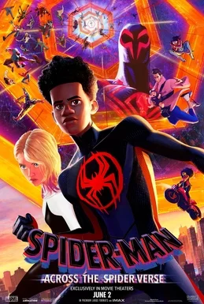

Spider-Man: Across the Spider-Verse (2023)
| Movie | Release Date | Poster |
|---|---|---|
| Spider-Man: Across the Spider-Verse PG · 2h 20m · action comedy · superhero · action |  |
| Trailer |
|---|
| Rotten Tomatoes | Metacritic | IMDb |
|---|---|---|
| 95% | 86/100 | View on IMDb |
| Overview |
|---|
Spider-Man: Across the Spider-Verse is a 2023 American animated superhero film based on the Marvel Comics character Miles Morales / Spider-Man. Directed by Joaquim Dos Santos, Kemp Powers and Justin K. Thompson from a screenplay by the writing team of Phil Lord and Christopher Miller and Dave Callaham, it is the sequel to Spider-Man: Into the Spider-Verse (2018) and the second film in the animated Spider-Verse franchise. Shameik Moore stars as Miles Morales, with Hailee Steinfeld, Brian Tyree Henry, Luna Lauren Velez, Jake Johnson, Jason Schwartzman, Issa Rae, Karan Soni, Shea Whigham, Greta Lee, Daniel Kaluuya, Mahershala Ali, and Oscar Isaac in supporting roles. In the film, Miles goes on an adventure with Gwen Stacy (Steinfeld) across the multiverse, where he meets a team of Spider-People known as the Spider-Society. It was produced by Columbia Pictures and Sony Pictures Animation in association with Marvel Entertainment. Full plot (spoilers)On Earth-65, Spider-Woman Gwen Stacy has become increasingly isolated from her friends and estranged from her father George Stacy. George is hunting Spider-Woman for killing Peter Parker , unaware that it was an accident after Peter turned into the Lizard . Gwen encounters an alternate version of the Vulture , and Miguel O'Hara and Jess Drew arrive through dimensional portals to help neutralize him. George corners Gwen and she reveals her identity to him. He attempts to arrest her before she leaves with Jess and Miguel. On Earth-1610, 16 months after the destruction of the Alchemax collider, Miles Morales is struggling with his duties as Spider-Man interfering with his personal life and is grounded when he is late to a party celebrating his father Jeff 's promotion to police captain. After he runs away with Gwen, his parents extend his punishment. Miles encounters the Spot , an Alchemax scientist whose body was infused with portals during the collider's destruction. The Spot blames Miles for his mutation and reveals that the radioactive spider that gave Miles his powers came from an alternate universe, Earth-42 , while the Spot was testing the collider. The Spot unwittingly transports himself into a void and learns to use his portals to traverse other universes and empower himself by using Alchemax colliders in other dimensions. Gwen travels to Miles' dimension and they reconnect, sharing their struggles. Miles attempts to convey his feelings for Gwen, but she fears that a Gwen Stacy falling for Spider-Man never ends well. Gwen secretly tracks the Spot and opens a portal to the next universe: Earth-50101. Miles discreetly follows Gwen into the portal, and the two team up with Earth-50101's local Spider-Man Pavitr Prabhakar , and later Hobie Brown , against the Spot. The Spot absorbs the power of that dimension's collider, and he and Miles share a vision of his future attacks, which include the deaths of Jeff and Police Inspector Singh, the father of Pavitr's girlfriend Gayatri. The Spot escapes and Miles saves Singh from the collider's destruction, but the world begins to collapse before other Spider-People arrive to contain the damage. Miles, Gwen, and Hobie are taken to Nueva York in Earth-928, where a multiversal society of Spider-People, known as the Spider-Society, work together to combat multiversal threats. Miles meets Miguel, the leader of the Society, and reunites with Peter B. Parker , who introduces him to his infant daughter, Mayday . Miguel explains to Miles that each Spider-Person's story contains " canon events", such as the death of a police captain close to Spider-Man, which cannot be disrupted; otherwise, that universe may collapse, which in turn could collapse the entire multiverse as a consequence. Miles realizes that the Spot killing Jeff is a canon event. Miles is imprisoned by Miguel after refusing to abandon Jeff. Miles frees himself with help from Hobie and flees with the Society in pursuit. Miguel corners Miles and reveals that he was never supposed to be Spider-Man; the spider from Earth-42 was not supposed to bite him, resulting in Earth-42 lacking a Spider-Man, the Spot's creation, and the death of Earth-1610's Peter Parker. Miles overpowers Miguel and, with help from Margo Kess , escapes Miguel's universe. Gwen defends Miles and is exiled to her own universe by Miguel. At home, Gwen and George reconcile when he reveals he has resigned from the force instead of arresting her, preventing his canon event. George gives Gwen a makeshift portal device left for her by Hobie. Gwen travels back to Earth-1610 and searches for Miles, as do members of the Society. Miles tries to reveal his secret identity to his mother Rio , much to her confusion. Miles and Gwen realize that he is on Earth-42, where Miles' late uncle Aaron Davis is alive while Jeff is dead, and New York is crime-ridden due to the lack of a Spider-Man. Aaron restrains Miles and is joined by Earth-42's counterpart of Miles, the Prowler . As the Spot prepares his attack on Earth-1610's New York, Gwen promises Rio and Jeff of that universe to bring back Miles, and teams up with Peter B., Mayday, Pavitr, Hobie, Margo, Spider-Man Noir , Peni Parker , and Spider-Ham , while Miles prepares to escape. |
| Actor | Character | Photo |
|---|---|---|
| Shameik Moore | Miles Morales / Spider-Man A teenager who took over as the Spider-Man of Earth-1610 after the death of his reality's Peter Parker by Kingpin |  |
| Hailee Steinfeld | Gwen Stacy / Spider-Gwen / Spider-Woman A version of Gwen Stacy who is the Spider-Woman of Earth-65 , where she is a wanted fugitive since accidentally killing her reality's Peter Parker who had turned into the Lizard . | |
| Brian Tyree Henry | Jefferson Morales (ne Davis) Miles' father and a police officer, who was recently promoted to captain. | |
| Lauren Vélez | Rio Morales Miles' mother, a nurse. | |
| Jake Johnson | Peter B. Parker / Spider-Man An older Spider-Man from Earth-616B who was a mentor to Miles. |  |
| Jason Schwartzman | Johnathon Ohnn / the Spot A former scientist from Alchemax -turned-supervillain after an accident, whose body is now covered by interdimensional portals that allow him to travel through space and different universes. |  |
| Issa Rae | Jess Drew / Spider-Woman A pregnant Spider-Woman from Earth-332 who is Miguel's right-hand and rides a motorcycle. | |
| Karan Soni | Pavitr Prabhakar / Spider-Man India A version of Spider-Man from Earth-50101 whose wrist bands act as web slingers, and lives in Mumbattan (a portmanteau of Mumbai and Manhattan ) | |
| Shea Whigham | George Stacy , Gwen's father and a police captain | No photo |
| Greta Lee | Lyla , Miguel and the Spider Society's AI assistant | No photo |
| Daniel Kaluuya | Hobie Brown / Spider-Punk A punk rock version of Spider-Man from Earth-138 who uses his guitar as his main weapon | |
| Mahershala Ali | Aaron Davis , the Earth-42 version of Miles' deceased uncle (Ali previously voiced the Earth-1610 version of Aaron in the first film) | No photo |
| Oscar Isaac | Miguel O'Hara / Spider-Man 2099 A " ninja - vampire " Spider-Man from Earth-928 set in the year 2099 , who is the leader of the Spider-Society , a group of Spider-People from alternate universes tasked with protecting the multiverse . | |
| Andy Samberg | Ben Reilly | No photo |
| Amandla Stenberg | Spider-Byte | No photo |
| Detail | Value |
|---|---|
| Directed by | Joaquim Dos Santos, Kemp Powers, Justin K. Thompson |
| Written by | David Callaham |
| Produced by | Avi Arad, Amy Pascal, Phil Lord and Christopher Miller |
| Music by | Daniel Pemberton |
| Cinematography | Not available |
| Edited by | Not available |
| Production companies | Columbia Pictures, Sony Pictures Animation, Marvel Entertainment |
| Distributed by | Sony Pictures Motion Picture Group, InterCom |
| Running time | 140 minutes |
| MPAA rating | PG |
| Budget | $100 million |
| Box office | Not available |
Overview, plot, and cast descriptions are from Wikipedia (CC BY-SA 4.0). Credits, ratings, and box office are from Wikidata.